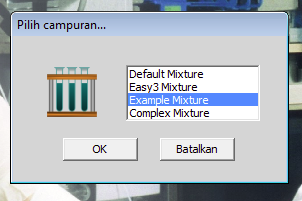

kembali ke awalnya
latihan sebelumnya
kembali ke awalnya
latihan sebelumnya
Latihan 6 dari 6
Hitung Jumlah Subunit dalam Protein Oligomerik
Campuran protein yang disebut Example_Mixture mengandung enam protein monomerik yang memiliki berat molekul sebagai berikut ini:
| protein | berat molekul |
|---|
| 1 | 200.000 |
| 2 | 100.000 |
| 3 | 50.000 |
| 4 | 25.000 |
| 5 | 12.500 |
| 6 | 7.400 |
Antara bahan kromatografi filtrasi gel yang tersedia dalam simulasi ini, manakah yang paling tepat untuk pemisahan keenam protein ini menjadi saling terpisah satu dari yang lainnya?

Pilih campuran ini (pilih salah satu protein - yang dipilih terserah anda) dan lakukan kromatografi filtrasi gel dengan bahan yang sudah anda pilih. Untuk masing-masing dari keenam protein ini, catat nomor fraksi pada titik tengah puncak protein itu dari profil elusi. Gambarkan hubungan antara nomor fraksi dan log berat molekul masing-masing protein. Apakah anda memperoleh garis lurus? Jika tidak, maka anda seharusnya memeriksa data anda sebelum anda maju ke langkah berikutnya.
 Sekarang pilih campuran yang disebut Default_Mixture dan pilih protein 15. Lakukan kromatografi filtrasi gel dengan bahan yang sama seperti yang anda pakai sebelumnya untuk perlakuan di atas. Tentukan fraksi yang mengandung protein 15 dengan menguji aktivitas enzimnya. Fraksi nomor berapa yang mengandung aktivitas enzim ini paling banyak? Berapakah berat molekul asli (native) protein 15? Lakukan elektroforesis gel poliakrilamida-1D yang mengandung SDS dengan fraksi yang mengandung aktivitas protein 15 tertinggi. Tentukan letak protein 15 dengan immunoblotting. Berapakah kira-kira berat molekul subunit dari protein 15? Berapa subunit dalam protein ini?
Sekarang pilih campuran yang disebut Default_Mixture dan pilih protein 15. Lakukan kromatografi filtrasi gel dengan bahan yang sama seperti yang anda pakai sebelumnya untuk perlakuan di atas. Tentukan fraksi yang mengandung protein 15 dengan menguji aktivitas enzimnya. Fraksi nomor berapa yang mengandung aktivitas enzim ini paling banyak? Berapakah berat molekul asli (native) protein 15? Lakukan elektroforesis gel poliakrilamida-1D yang mengandung SDS dengan fraksi yang mengandung aktivitas protein 15 tertinggi. Tentukan letak protein 15 dengan immunoblotting. Berapakah kira-kira berat molekul subunit dari protein 15? Berapa subunit dalam protein ini?